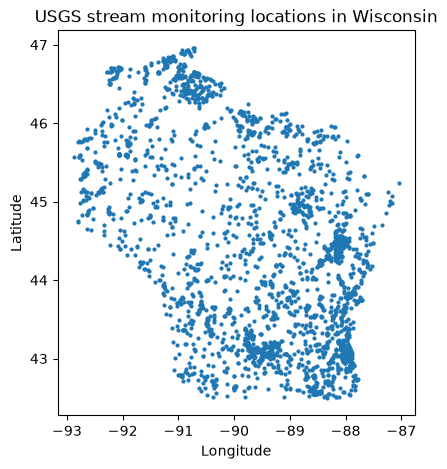
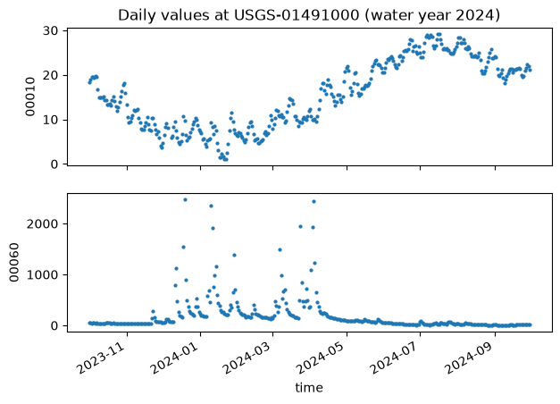
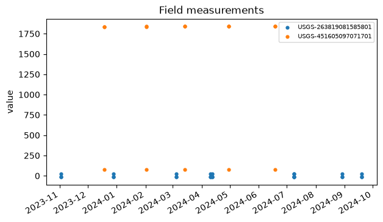
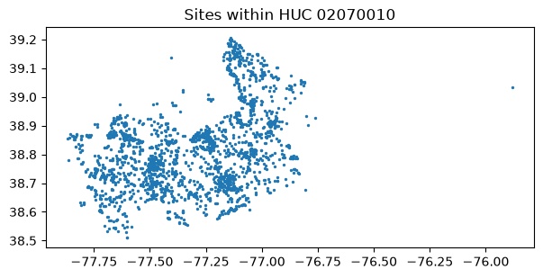

Introduction to the USGS Water Data APIs
The USGS Water Data APIs are the modern, OGC-based replacement for the legacy NWIS web services. In Python they are exposed through the dataretrieval.waterdata module, which will gradually replace the older dataretrieval.nwis functions.
This notebook tours each new function. The NWIS shut-down timeline is still uncertain, so we recommend migrating to the waterdata functions sooner rather than later.
If you are coming from the R dataRetrieval package, the functions map across as follows:
R |
Python |
|---|---|
|
|
|
|
|
|
|
|
|
|
|
|
|
|
|
|
|
the |
|
|
|
|
|
|
[1]:
import matplotlib.pyplot as plt
import pandas as pd
from dataretrieval import waterdata
%matplotlib inline
plt.rcParams["figure.figsize"] = (7, 4)
Return values. Every
dataretrieval.waterdatafunction returns a(data, metadata)tuple. The first element is apandas.DataFrame(or ageopandas.GeoDataFramewhen the service returns a geometry column); the second is a small metadata object describing the request. Throughout this notebook we unpack the tuple asdf, md = waterdata.get_...(...).
New features
The new API endpoints each deliver a different type of USGS water data, and they all share features the legacy services lacked.
Flexible queries
The new functions expose all of the query parameters the API supports, each defaulting to None. You do not need to (and usually should not) specify them all. Filters are combined with a Boolean AND: passing both a list of monitoring locations and a list of parameter codes returns only the combinations of the two. Because every argument is named, your IDE can autocomplete the options.
Flexible columns returned
Use the properties argument to choose which columns come back. The full set of available properties for a collection is published in that collection’s schema, e.g. https://api.waterdata.usgs.gov/ogcapi/v0/collections/daily/queryables.
[2]:
# Ask for just a few columns instead of the full ~40-column record.
sites_info, _ = waterdata.get_monitoring_locations(
monitoring_location_id="USGS-01491000",
properties=[
"monitoring_location_id",
"site_type",
"drainage_area",
"monitoring_location_name",
],
)
sites_info.drop(columns="geometry")
Retrieving: monitoring-locations · 1 page · 1 rows
No API key detected — register for higher rate limits at https://api.waterdata.usgs.gov/signup/
[2]:
| monitoring_location_id | site_type | drainage_area | monitoring_location_name | |
|---|---|---|---|---|
| 0 | USGS-01491000 | Stream | 113.0 | CHOPTANK RIVER NEAR GREENSBORO, MD |
API tokens
USGS now rate-limits requests per IP address per hour. If you hit the limit you can request a free API token at https://api.waterdata.usgs.gov/signup/. Keep it out of shared scripts and version control. (At the time of writing the Python dataretrieval package does not yet wire a token into these calls; the rate limits are generous for the queries below.)
Contextual Query Language (CQL2)
The APIs accept CQL2 expressions for complex queries through the filter / filter_lang arguments. See the General retrieval and CQL2 section below.
Simple features
Spatial collections return a geometry column, so get_* calls give you a geopandas.GeoDataFrame that drops straight into geospatial workflows. Pass skip_geometry=True to get a plain DataFrame.
Lessons learned
Request many sites in one call
dataretrieval automatically splits a large request — many monitoring locations, several parameter codes, or a complex filter — into URL-sized sub-requests and recombines the results, and it can resume a long pull that hits a rate limit or transient server error without refetching completed work. So pass all your sites in one call rather than looping over them.
The main exception is continuous data, which is capped at 3 years per request. See the Continuous Data notebook for large continuous pulls.
New functions
Monitoring location
get_monitoring_locations returns site metadata. To browse the service in a web browser, visit https://api.waterdata.usgs.gov/ogcapi/v0/collections/monitoring-locations.
A simple request for one known USGS site:
[3]:
sites_info, _ = waterdata.get_monitoring_locations(
monitoring_location_id="USGS-01491000"
)
print(f"{sites_info.shape[1]} columns returned")
sites_info.drop(columns="geometry").T
Retrieving: monitoring-locations · 1 page · 1 rows
44 columns returned
[3]:
| 0 | |
|---|---|
| monitoring_location_id | USGS-01491000 |
| agency_code | USGS |
| agency_name | U.S. Geological Survey |
| monitoring_location_number | 01491000 |
| monitoring_location_name | CHOPTANK RIVER NEAR GREENSBORO, MD |
| district_code | 24 |
| country_code | US |
| country_name | United States of America |
| state_code | 24 |
| state_name | Maryland |
| county_code | 011 |
| county_name | Caroline County |
| minor_civil_division_code | None |
| site_type_code | ST |
| site_type | Stream |
| hydrologic_unit_code | 020600050203 |
| basin_code | None |
| altitude | 2.73 |
| altitude_accuracy | 0.1 |
| altitude_method_code | N |
| altitude_method_name | Interpolated from Digital Elevation Model |
| vertical_datum | NAVD88 |
| vertical_datum_name | North American Vertical Datum of 1988 |
| horizontal_positional_accuracy_code | S |
| horizontal_positional_accuracy | Accurate to + or - 1 sec. |
| horizontal_position_method_code | M |
| horizontal_position_method_name | Interpolated from MAP. |
| original_horizontal_datum | NAD83 |
| original_horizontal_datum_name | North American Datum of 1983 |
| drainage_area | 113.0 |
| contributing_drainage_area | NaN |
| time_zone_abbreviation | EST |
| uses_daylight_savings | Y |
| construction_date | NaT |
| aquifer_code | None |
| national_aquifer_code | None |
| aquifer_type_code | None |
| well_constructed_depth | NaN |
| hole_constructed_depth | NaN |
| depth_source_code | None |
| revision_note | WSP 1622: 1948. WDR MD-DE-79-1: 1961(P). |
| revision_created | 2017-11-13T06:00:00+00:00 |
| revision_modified | None |
Any returned column can also be used as an input filter. For example, to find every stream site in Wisconsin:
[4]:
sites_wi, _ = waterdata.get_monitoring_locations(
state_name="Wisconsin",
site_type="Stream",
)
print(f"{len(sites_wi)} Wisconsin stream sites")
sites_wi[["monitoring_location_id", "monitoring_location_name", "geometry"]].head()
Retrieving: monitoring-locations · 1 page · 2,813 rows
2813 Wisconsin stream sites
[4]:
| monitoring_location_id | monitoring_location_name | geometry | |
|---|---|---|---|
| 0 | ASCE-885512345000005 | MLR 2 BATCH TEST - ASCE 005 | POINT (-89.13328 44.17978) |
| 1 | ASCE-885512345000006 | MLR 2 BATCH TEST - ASCE 006 | POINT (-89.1725 44.11972) |
| 2 | ASCE-885512345000007 | MLR 2 BATCH TEST - ASCE 007 | POINT (-88.81972 44.09361) |
| 3 | USGS-04023120 | FLAG RIVER AT PORT WING, WI | POINT (-91.37367 46.78267) |
| 4 | USGS-04024025 | ST. LOUIS RIVER AT HWY. 23 ABOVE FOND DU LAC, MN | POINT (-92.28408 46.65844) |
Because the result is a GeoDataFrame, plotting the locations is a one-liner. For an interactive map, folium works well with the same data.
[5]:
ax = sites_wi.plot(markersize=4, figsize=(7, 5))
ax.set_title("USGS stream monitoring locations in Wisconsin")
ax.set_xlabel("Longitude")
ax.set_ylabel("Latitude")
plt.show()

Time series & combined metadata
get_combined_metadata merges time-series metadata (get_time_series_metadata) and field-measurement metadata by site, telling you which time series a site offers and the span of each.
[6]:
ts_available, _ = waterdata.get_combined_metadata(
monitoring_location_id="USGS-01491000",
parameter_code=["00060", "00010"],
)
cols = ["parameter_name", "statistic_id", "begin", "end", "last_modified"]
ts_available[cols]
Retrieving: combined-metadata · 1 page · 11 rows
[6]:
| parameter_name | statistic_id | begin | end | last_modified | |
|---|---|---|---|---|---|
| 0 | Discharge | NaN | 1948-01-15 13:00:00+00:00 | 2026-03-20 14:18:02+00:00 | 2026-05-26 17:51:47.057930+00:00 |
| 1 | Discharge | NaN | 1948-01-14 05:00:00+00:00 | 2025-04-13 04:00:00+00:00 | 2026-03-20 16:28:29.353284+00:00 |
| 2 | Temperature, water | 00011 | 2023-04-20 22:30:00+00:00 | 2026-06-01 12:30:00+00:00 | 2026-06-01 08:38:01.430776+00:00 |
| 3 | Temperature, water | 00002 | 2023-04-21 04:00:00+00:00 | 2026-05-30 04:00:00+00:00 | 2026-06-01 05:37:06.449741+00:00 |
| 4 | Discharge | 00003 | 1948-01-01 05:00:00+00:00 | 2026-05-31 04:00:00+00:00 | 2026-06-01 05:30:22.483573+00:00 |
| 5 | Temperature, water | 00001 | 2023-04-21 04:00:00+00:00 | 2026-05-30 04:00:00+00:00 | 2026-06-01 05:37:06.474727+00:00 |
| 6 | Temperature, water | 00003 | 2023-04-21 04:00:00+00:00 | 2026-05-31 04:00:00+00:00 | 2026-06-01 05:37:06.043253+00:00 |
| 7 | Discharge | 00011 | 1990-10-01 09:08:09+00:00 | 2026-06-01 11:15:00+00:00 | 2026-06-01 07:28:50.216446+00:00 |
| 8 | Temperature, water | 00001 | 1988-10-01 04:00:00+00:00 | 2012-05-09 04:00:00+00:00 | 2020-08-27 16:15:01.888947+00:00 |
| 9 | Temperature, water | 00002 | 2010-10-01 04:00:00+00:00 | 2012-05-09 04:00:00+00:00 | 2020-08-27 16:16:01.630091+00:00 |
| 10 | Temperature, water | 00003 | 2010-10-01 04:00:00+00:00 | 2012-05-09 04:00:00+00:00 | 2020-08-27 16:15:36.763326+00:00 |
Parameter codes
Parameter-code descriptions come from the parameter-codes reference table:
[7]:
pcode_info, _ = waterdata.get_reference_table(
collection="parameter-codes",
query={"id": "00660"},
)
pcode_info.T
Retrieving: parameter-codes · 1 page · 1 rows
[7]:
| 0 | |
|---|---|
| parameter_code | 00660 |
| parameter_name | Orthophosphate, wf |
| unit_of_measure | mg/l asPO4 |
| parameter_group_code | NUT |
| parameter_description | Orthophosphate, water, filtered, milligrams pe... |
| medium | Water |
| statistical_basis | None |
| time_basis | None |
| weight_basis | None |
| particle_size_basis | None |
| sample_fraction | Dissolved |
| temperature_basis | None |
| epa_equivalence | Not checked |
Daily values
get_daily returns daily values. Browse it at https://api.waterdata.usgs.gov/ogcapi/v0/collections/daily.
[8]:
daily_data, _ = waterdata.get_daily(
monitoring_location_id="USGS-01491000",
parameter_code=["00060", "00010"],
statistic_id="00003",
time=["2023-10-01", "2024-09-30"],
)
daily_data[["time", "parameter_code", "value", "approval_status"]].head()
Retrieving: daily · 1 page · 730 rows
[8]:
| time | parameter_code | value | approval_status | |
|---|---|---|---|---|
| 0 | 2023-10-01 | 00010 | 18.3 | Approved |
| 1 | 2023-10-01 | 00060 | 61.9 | Approved |
| 2 | 2023-10-02 | 00060 | 57.2 | Approved |
| 3 | 2023-10-02 | 00010 | 19.0 | Approved |
| 4 | 2023-10-03 | 00010 | 19.6 | Approved |
Notice the data come back in long format — one observation per row. Long data are usually easier to work with; here we facet by parameter_code:
[9]:
params = sorted(daily_data["parameter_code"].unique())
fig, axes = plt.subplots(len(params), 1, figsize=(7, 5), sharex=True)
for ax, pcode in zip(axes, params):
sub = daily_data[daily_data["parameter_code"] == pcode]
ax.scatter(sub["time"], sub["value"], s=4)
ax.set_ylabel(pcode)
axes[0].set_title("Daily values at USGS-01491000 (water year 2024)")
axes[-1].set_xlabel("time")
fig.autofmt_xdate()
plt.show()

Continuous
get_continuous returns instantaneous (sensor) values. Browse it at https://api.waterdata.usgs.gov/ogcapi/v0/collections/continuous.
This service currently allows at most 3 years of data per request; with no time argument it returns the latest year. Continuous data have no geometry column and do not support bounding-box queries. For large pulls, see the Continuous Data notebook.
[10]:
sensor_data, _ = waterdata.get_continuous(
monitoring_location_id="USGS-01491000",
parameter_code="00060",
time="2024-09-01/2024-09-03",
)
sensor_data[["time", "parameter_code", "value", "approval_status"]].head()
Retrieving: continuous · 1 page · 193 rows
[10]:
| time | parameter_code | value | approval_status | |
|---|---|---|---|---|
| 0 | 2024-09-01 00:00:00+00:00 | 00060 | 11.7 | Approved |
| 1 | 2024-09-01 00:15:00+00:00 | 00060 | 12.0 | Approved |
| 2 | 2024-09-01 00:30:00+00:00 | 00060 | 11.7 | Approved |
| 3 | 2024-09-01 00:45:00+00:00 | 00060 | 11.7 | Approved |
| 4 | 2024-09-01 01:00:00+00:00 | 00060 | 12.0 | Approved |
Field measurements
get_field_measurements returns discrete field measurements, including groundwater levels.
[11]:
field_data, _ = waterdata.get_field_measurements(
monitoring_location_id=[
"USGS-451605097071701",
"USGS-263819081585801",
],
time=["2023-10-01", "2024-09-30"],
)
field_data[["time", "monitoring_location_id", "parameter_code", "value"]].head()
Retrieving: field-measurements · 1 page · 42 rows
[11]:
| time | monitoring_location_id | parameter_code | value | |
|---|---|---|---|---|
| 0 | 2023-11-02 18:45:00+00:00 | USGS-263819081585801 | 72019 | 27.55 |
| 1 | 2023-11-02 18:45:00+00:00 | USGS-263819081585801 | 62610 | -14.55 |
| 2 | 2023-11-02 18:45:00+00:00 | USGS-263819081585801 | 62611 | -15.68 |
| 3 | 2023-12-18 21:25:00+00:00 | USGS-451605097071701 | 62610 | 1836.12 |
| 4 | 2023-12-18 21:25:00+00:00 | USGS-451605097071701 | 72019 | 80.75 |
[12]:
fig, ax = plt.subplots(figsize=(7, 4))
for site, sub in field_data.groupby("monitoring_location_id"):
ax.scatter(sub["time"], sub["value"], s=12, label=site)
ax.set_ylabel("value")
ax.set_title("Field measurements")
ax.legend(fontsize=7)
fig.autofmt_xdate()
plt.show()

Channel measurements
get_channel returns channel-geometry measurements that accompany get_field_measurements.
[13]:
channel, _ = waterdata.get_channel(monitoring_location_id="USGS-02238500")
channel[["time", "channel_width", "channel_area", "channel_velocity"]].head()
Retrieving: channel-measurements · 1 page · 472 rows
[13]:
| time | channel_width | channel_area | channel_velocity | |
|---|---|---|---|---|
| 0 | 1943-02-13 04:00:00+00:00 | 65.0 | 306 | 0.78 |
| 1 | 1943-02-26 04:00:00+00:00 | 47.0 | 187 | 1.07 |
| 2 | 1943-03-30 04:00:00+00:00 | 58.0 | 206 | 0.95 |
| 3 | 1943-05-01 04:00:00+00:00 | 45.0 | 200 | 0.78 |
| 4 | 1943-05-26 04:00:00+00:00 | 51.0 | 222 | 0.85 |
Latest continuous & latest daily
get_latest_continuous and get_latest_daily have no NWIS equivalent — they return the single most recent observation for each time series.
[14]:
latest_uv, _ = waterdata.get_latest_continuous(
monitoring_location_id="USGS-01491000",
parameter_code="00060",
)
cols = ["time", "value", "approval_status", "parameter_code", "unit_of_measure"]
latest_uv[cols].T
Retrieving: latest-continuous · 1 page · 1 rows
[14]:
| 0 | |
|---|---|
| time | 2026-06-01 18:15:00+00:00 |
| value | 30.9 |
| approval_status | Provisional |
| parameter_code | 00060 |
| unit_of_measure | ft^3/s |
[15]:
latest_dv, _ = waterdata.get_latest_daily(
monitoring_location_id="USGS-01491000",
parameter_code="00060",
)
latest_dv[cols].T
Retrieving: latest-daily · 1 page · 1 rows
[15]:
| 0 | |
|---|---|
| time | 2026-05-31 00:00:00 |
| value | 30.8 |
| approval_status | Provisional |
| parameter_code | 00060 |
| unit_of_measure | ft^3/s |
General retrieval and CQL2
The OGC get_* functions accept a CQL2 expression through the filter / filter_lang arguments, so even complex queries run against these same functions — there is no separate “general retrieval” call.
CQL2 supports a wildcard via LIKE (% matches any trailing characters). This is handy for hydrologic unit codes, which may be stored as 02070010 or as a longer code beginning with those digits. To get every site whose HUC starts with 02070010:
[16]:
huc_sites, _ = waterdata.get_monitoring_locations(
filter="hydrologic_unit_code LIKE '02070010%'",
filter_lang="cql-text",
)
print(f"{len(huc_sites)} sites in HUC 02070010")
ax = huc_sites.plot(markersize=2, figsize=(7, 5))
ax.set_title("Sites within HUC 02070010")
plt.show()
Retrieving: monitoring-locations · 1 page · 2,354 rows
2354 sites in HUC 02070010

Numeric filters. Every queryable on the Water Data API is typed as a string, so an unquoted numeric comparison like
drainage_area > 1000is rejected by the server (and quoting it gives a misleading lexicographic comparison).dataretrievalcatches this and raises aValueError:
[17]:
try:
waterdata.get_monitoring_locations(
filter="drainage_area > 1000",
filter_lang="cql-text",
)
except ValueError as e:
print(type(e).__name__, "->", str(e)[:120], "...")
ValueError -> Filter uses an unquoted numeric comparison against 'drainage_area' (``drainage_area > 1000``). Every queryable on the Wa ...
The recommended pattern is to filter on the string-valued attributes the server understands (state, site type, HUC, …) and then do the numeric reduction in pandas. For example, large-drainage stream sites in Wisconsin and Minnesota:
[18]:
sites, _ = waterdata.get_monitoring_locations(
state_name=["Wisconsin", "Minnesota"],
site_type="Stream",
properties=[
"monitoring_location_id",
"monitoring_location_name",
"state_name",
"drainage_area",
],
)
big = sites[pd.to_numeric(sites["drainage_area"], errors="coerce") > 1000]
print(f"{len(big)} of {len(sites)} WI/MN stream sites drain > 1000 sq mi")
big.drop(columns="geometry").head()
Retrieving: monitoring-locations · 1 page · 5,400 rows
225 of 5400 WI/MN stream sites drain > 1000 sq mi
[18]:
| monitoring_location_id | monitoring_location_name | state_name | drainage_area | |
|---|---|---|---|---|
| 139 | USGS-04023500 | ST. LOUIS RIVER NEAR CLOQUET, MN | Minnesota | 3400.0 |
| 141 | USGS-04024000 | ST. LOUIS RIVER AT SCANLON, MN | Minnesota | 3430.0 |
| 426 | USGS-04062011 | BRULE RIVER NEAR COMMONWEALTH, WI | Wisconsin | 1020.0 |
| 427 | USGS-04063000 | MENOMINEE RIVER NEAR FLORENCE, WI | Wisconsin | 1760.0 |
| 456 | USGS-04065106 | MENOMINEE RIVER AT NIAGARA, WI | Wisconsin | 2470.0 |
Reference tables
get_reference_table exposes a variety of metadata tables. Any returned column can be filtered on. See the USGS Reference Lists notebook for the full list of collections.
Discrete samples
Discrete USGS water-quality data are served from a separate (non-OGC) endpoint via get_samples. See the Discrete water-quality samples notebook.
Daily data statistics
Pre-computed temporal summary statistics are available through get_stats_por (day-of-year / month-of-year) and get_stats_date_range (calendar month, calendar year, water year). See the Daily statistics notebook.
More notes
limit and paging
The limit argument sets how many rows come back per page, not the overall total — by default dataretrieval pages through everything. You rarely need to touch it; lowering it can help on a spotty connection.
The id column
Each endpoint natively returns an id column, and that value is used as an input to other endpoints under a different name (the monitoring-locations id is the monitoring_location_id everywhere else). dataretrieval renames id accordingly, but you can request the raw id column via properties:
[19]:
site = "USGS-02238500"
renamed, _ = waterdata.get_monitoring_locations(
monitoring_location_id=site,
properties=["monitoring_location_id", "state_name", "country_name"],
)
raw_id, _ = waterdata.get_monitoring_locations(
monitoring_location_id=site,
properties=["id", "state_name", "country_name"],
)
print("renamed:", [c for c in renamed.columns if c != "geometry"])
print("raw id :", [c for c in raw_id.columns if c != "geometry"])
Retrieving: monitoring-locations · 1 page · 1 rows
Retrieving: monitoring-locations · 1 page · 1 rows
renamed: ['monitoring_location_id', 'state_name', 'country_name']
raw id : ['monitoring_location_id', 'state_name', 'country_name']
More help
Documentation: https://doi-usgs.github.io/dataretrieval-python/
R package docs (source of these examples): https://doi-usgs.github.io/dataRetrieval/
Issues / questions: https://github.com/DOI-USGS/dataretrieval-python/issues